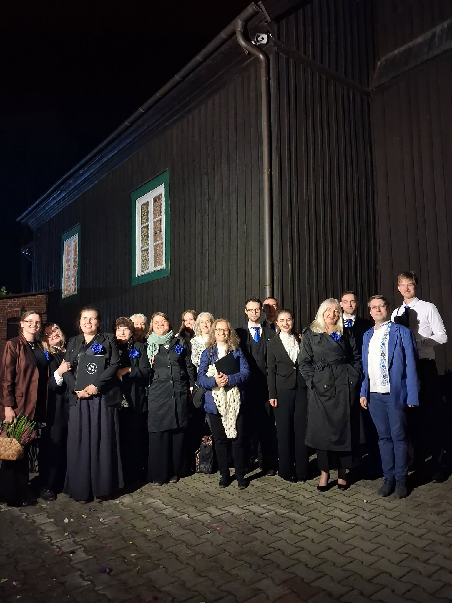
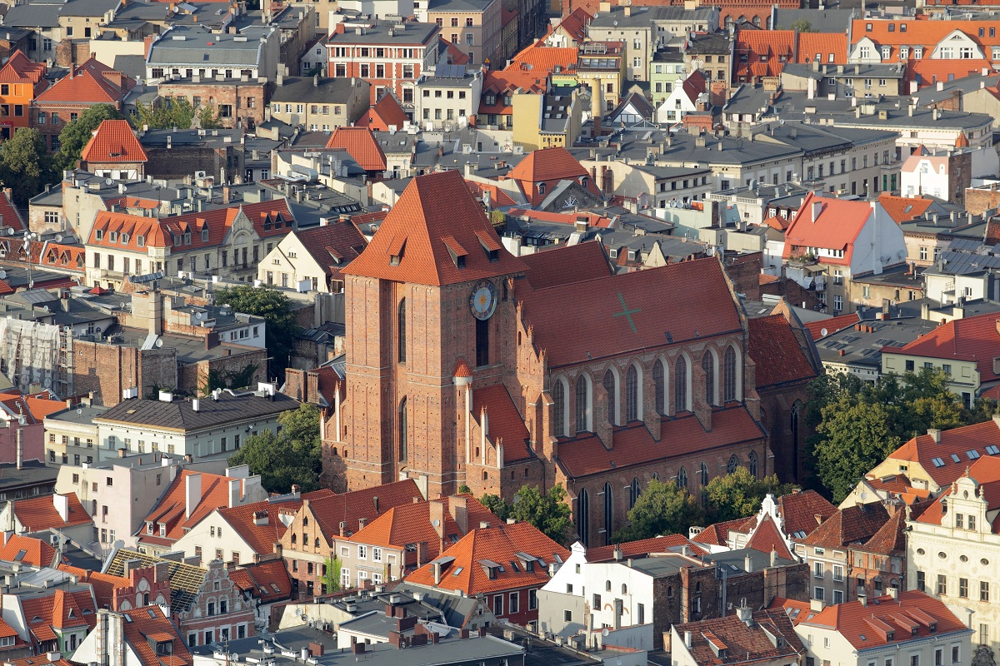

Wspólnota
Liczy się dla nas wspólnota i wspólne śpiewanie. Bądź z nami, kiedy możesz, bo rozumiemy, że nie zawsze się da.
Schola Cathedralis Thoruniensis to chór mieszany (SATB) działający przy katedrze św. Jana Chrzciciela i św. Jana Ewangelisty w Toruniu. W naszym repertuarze jest cała gama utworów sakralnych i nie tylko.
Śpiewanie w chórze katedralnym to nie tylko hobby, ale też wspólnota i posługa liturgiczna. Do zespołu zapraszamy każdego, także tych, którzy dopiero zaczynają.
Najważniejsze jest dla nas wspólne śpiewanie.

Liczy się dla nas wspólnota i wspólne śpiewanie. Bądź z nami, kiedy możesz, bo rozumiemy, że nie zawsze się da.
Śpiewamy w katedrze, więc muzyka jest dla nas także modlitwą i posługą liturgiczną.
Początkujący są u nas mile widziani. Uczymy się razem, krok po kroku, w swoim tempie.
Tu wpisz, kiedy i jak powstał chór.
Tu wpisz kamień milowy, np. pierwszy występ, zmiana dyrygenta, wydarzenie, z którego jesteście dumni.
Tu wpisz, jak wygląda chór teraz i dokąd zmierza.
Kilka minut nagrania powie więcej niż opis.

Bazylika katedralna św. Jana Chrzciciela i św. Jana Ewangelisty to gotycka świątynia w sercu Starego Miasta. Pod jej sklepieniami śpiewamy i spotykamy się na próbach.